| Home Reporting A Judge’s Charge Dupraw’s Notes Sklarew’s Notes Zoubek’s Notes Pre-Anniversary Description Reference Material Brief Form List Anniversary Description Reading Material Reference Material Brief Form List Most-Used Phrases Simplified Description Brief Form List Dupraw on Note Size Diamond Jubilee Description Brief Form List Expert Brief Form List Series 90 Description Brief Form List Centennial Description Brief Form List Taquigrafía Gregg Gramálogos German Gregg Manual Esperanto Gregg Manual Brief Forms Irish Gregg Manual Gregg Group Gregg Learning Forum Ms. Letha’s SH Site Shorthand³ Omniglot's Entry Wikipedia's Entry Stenospeed Dictation Practice Andrew Owen |
24. The letter S is represented by two signs . The former is called "Reverse S" and the latter "Comma S". They are invariably written downwards. SP and ST are written in shorthand as they are written in longhand, not SCHP and SCHT, as usually pronounced. Thus, Speck is written s-p-e-k. 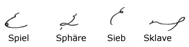 S is written above the line of writing when it precedes a downstroke. 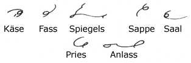 When preceding or following a curve the S is written which has the same movement as that curve, whether a circle intervenes or not. 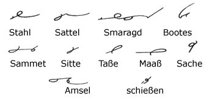 S is joined to T, D, N, M to form a sharp angle; with the straight downstrokes the comma S is used. There are a few words similar to the above; the angle between the S and the T should be rounded off. 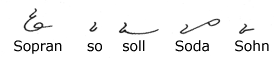 Comma S is used in words beginning with SO 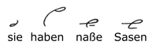 It is occasionally necessary to distinguish between S and SS (SZ) as in weisen and weißen. The SS is distinguished by an oblique dash.
The syllable EX is represented by ES. 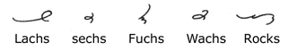 CHS (when pronounced as X) and X (in such a word as Luxus) are expressed by the S slightly modified as regards direction of stroke. The separate letters KS must be written when the S is the sign of the genitive or the connecting letter in compound words. 25. Expression of Z 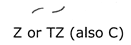 The strokes used for S, when written upwards (but a little nearer to the horizontal), represent the Z in Zeit, the TZ in Klotz, or the C in Ceres.
The reverse Z is used before or after O, R, L. 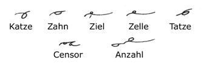 In all other cases the forward Z is used. 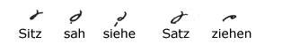 S and Z alone or together are always written with the "clock motion"—the comma S and the forward Z. 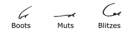 The signs for Z are not used for TS when the S represents the genitive or the connecting letter in compound words. 26. Expressing NG and NK 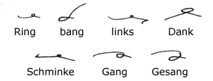 NG is represented by the N turned downwardly, and NK (pronounced NG-K) by M written similarly. N. B. It must be carefully noted that this sound is not heard in such words as angehen, where the N and the G belong to different syllables and retain their alphabetic sounds. 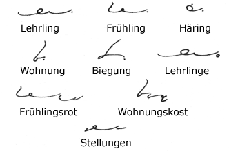 The separate syllables ING and UNG are represented by a dot; INGE is represented by a small circle disconnected; UNGEN by a disconnected S, preferably the reverse S but the comma S when the other does not give a good enough joining. 27. Expressing EM, IM, EN, IN, and UN. 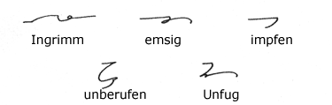 M at the beginning of a word stands for the prefix syllables EM, IM, and N represents the syllables EN, IN, UN. The foregoing holds good only when such syllables are immediately followed by a consonant (W and J are considered as vowels). 28. Word-Signs 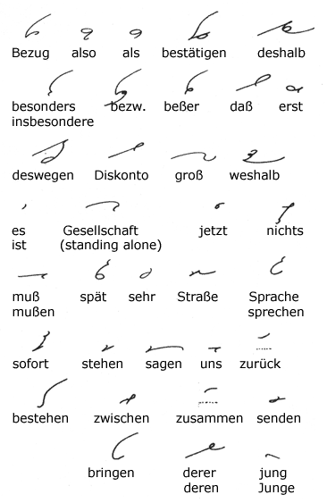 The foregoing is a long list of word-signs, but they are all very simple and easy to memorize. - Next Page - |


|
Preface About Gregg Shorthand Editor's Note A Talk with the Beginner The Alphabet Chapter I Unit 1 Unit 2 Unit 3 Chapter II Unit 4 Unit 5 Unit 6 Chapter III Unit 7 Unit 8 Unit 9 Chapter IV Unit 10 Unit 11 Unit 12 Chapter V Unit 13 Unit 14 Unit 15 Chapter VI Unit 16 Unit 17 Unit 18 Chapter VII Unit 19 Unit 20 Unit 21 Chapter VIII Unit 22 Unit 23 Unit 24 Chapter IX Unit 25 Unit 26 Unit 27 Chapter X Unit 28 Unit 29 Unit 30 Chapter XI Unit 31 Unit 32 Unit 33 Chapter XII Unit 34 Unit 35 Unit 36 |